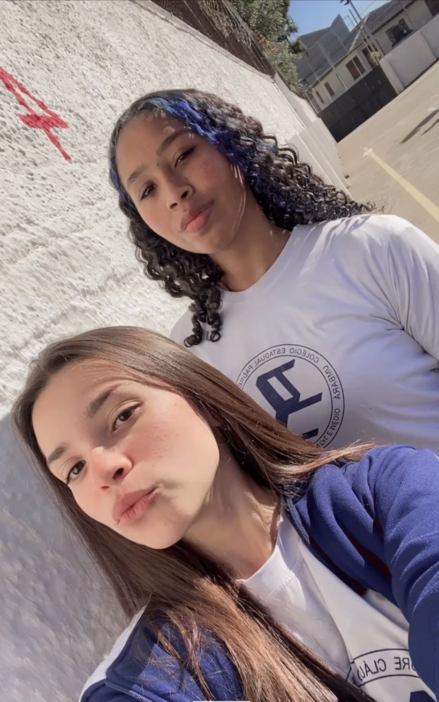
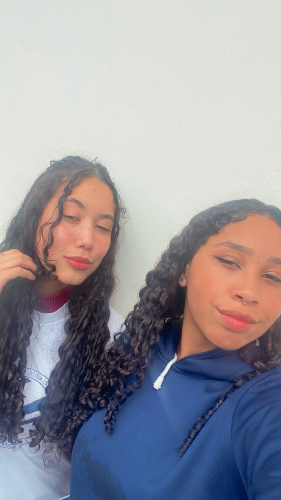
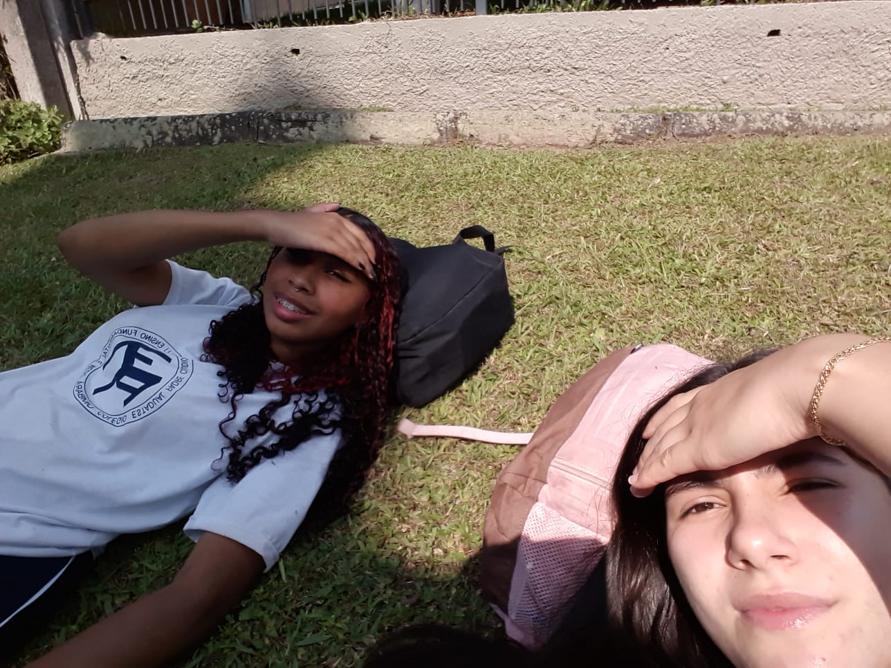
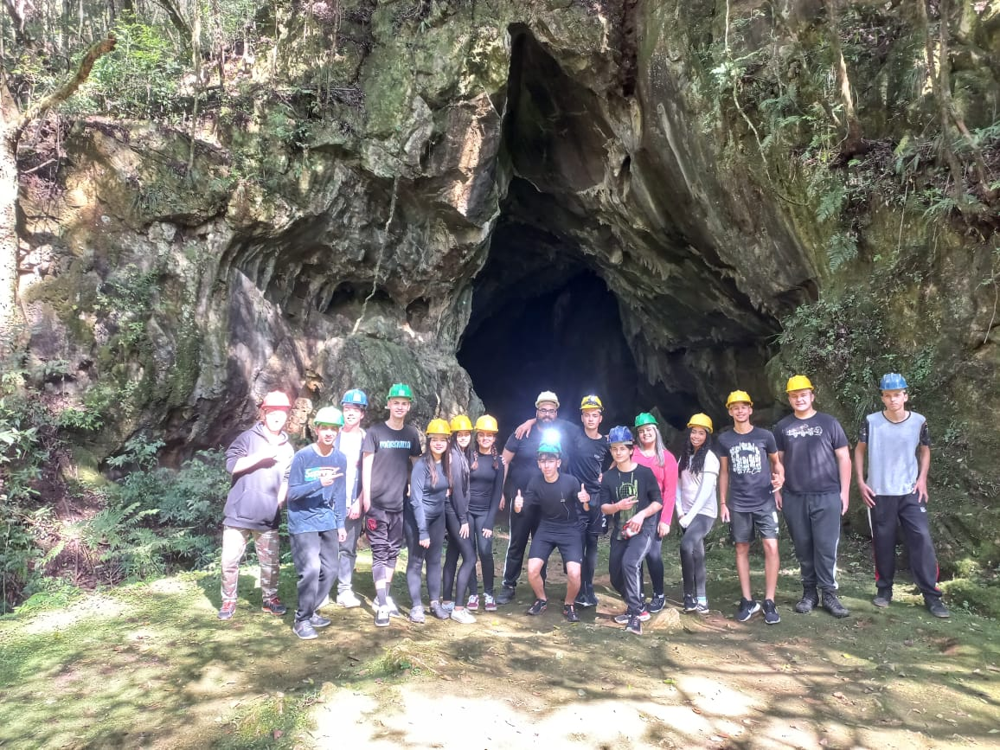
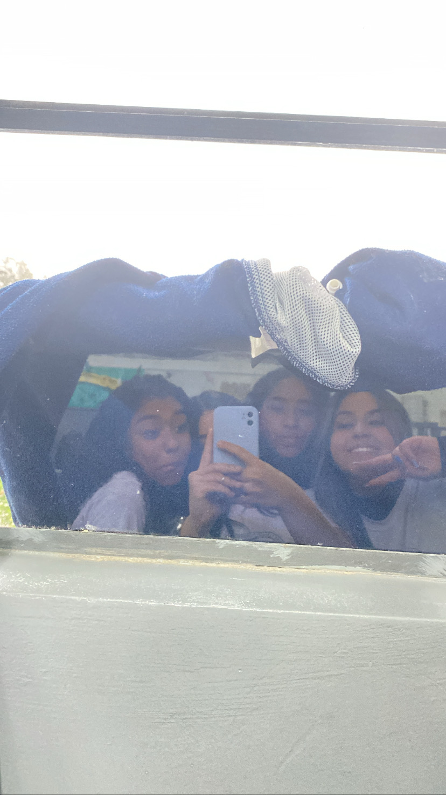

DATA:19.08.2022
Primeira foto tirada no 1° ano do ensino médio com minha amiga.

DATA:12.04.2024
Foto que registramos 3 dias antes do meu aniversário para postar no instagram.

DATA:24.11.2023
Renovando as fotinhas com a Gy.

03.05.2023
Dia ensolarado que cheguei mais cedo no colégio com a Sarah e deitamos na grama atrás do farol.

27.07.2023
Passeio feito pela escola numa caverna super legal com meus colegas.

28.09.2023
Registros de velhos momentos quando a Rhayanne estudava com nós.